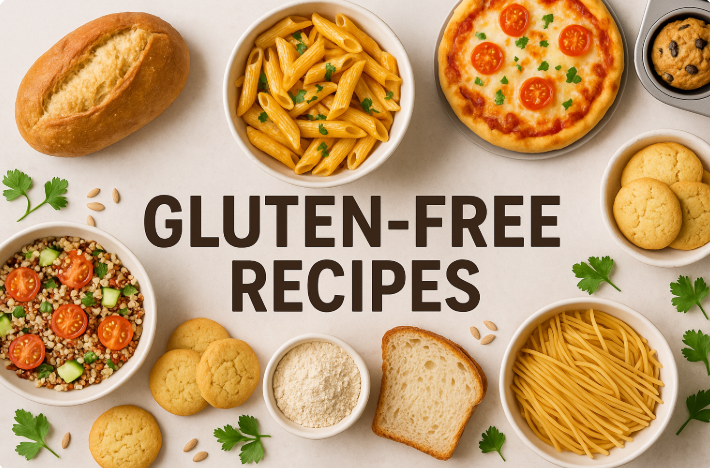

Bienvenue dans le monde des recettes sans gluten !
Nous vous proposons une variété de plats délicieux et sains, parfaits pour ceux qui souffrent d’intolérance au gluten ou qui suivent un régime sans gluten. Découvrez le plaisir de cuisiner facilement avec des recettes savoureuses et 100 % sans gluten !
Chaque recette est soigneusement sélectionnée pour garantir goût, équilibre et simplicité. Parce que bien manger sans gluten, c’est possible… et c’est délicieux !